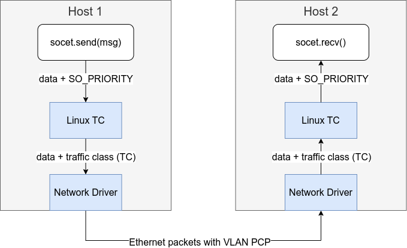

Priority Translation
The priority is used to mark the urgentness of the data packets, which presents in each layer of protocols for slightly different purposes.

-
Zenoh priority in userspace
It is an internal priotiy defined in the Zenoh network.
-
Linux socket priority
The priority is used within the Linux system, which are respected by Linux traffic control (TC) policies priority.
-
Traffic class
The traffic class on marked on packets on TX hardware queue. The Linux kernel maps the socket priorities to traffic classes before putting them to hardware queues.
-
VLAN Priority Code Point (PCP)
The priority number is labeled in the VLAN header, which enables layer 2 queing and traffic control defined in IEEE 802.1Q standard.
Priority Mapping Practices
Setting Socket Priority in Programs
In this TSN network, the application is responsible for providing
desired priority on data packets. The standard method is to configure
the SO_PRIORITY option on sockets using the setsockopt system
call. Here are C and Rust examples.
In the C programming language, the socket is represented by a file
descriptor. The file descriptor and the priority number are provided
to setsockopt().
#include <sys/socket.h>
// Open a socket
int fd = socket(AF_INET, SOCK_STREAM, 0);
// Set the SO_PRIORITY to 6
int priority = 6;
int ret = setsockopt(fd, SOL_SOCKET, SO_PRIORITY, &priority, sizeof(priority));
if (ret < 0) { /* error */ }
In the Rust programming language, a TCP connection is created by a
TcpStream and the underlying file descriptor is obtained from the
stream. We call the setsockopt() from the
nix library to configure the socket
priority.
#![allow(unused)] fn main() { use nix::sys::socket::{sockopt::Priority, getsockopt, setsockopt}; use std::net::TcpStream; use std::os::unix::io::AsRawFd; // Create a TCP socket let mut stream = TcpStream::connect("11.22.33.44")?; // The the underlying file descriptor of the socket. let fd = stream.as_raw_fd(); // Set SO_PRIORITY to 6. setsockopt(fd, Priority, 6)?; }
Mapping Socket Priority to Traffic Classes
The traffic classes are respected by hardware queues within network
cards. This is an example TAPRIO qdisc policy configured on physical
network device eth0 the device.
sudo tc qdisc replace dev eth0 parent root handle 100 taprio \
num_tc 3 \
map 2 2 1 0 2 2 2 2 2 2 2 2 2 2 2 2 \
queues 1@0 1@0 1@0 \
base-time 1528743495910289987 \
sched-entry S 01 300000 \
sched-entry S 02 300000 \
sched-entry S 04 400000 \
flags 0x1 \
txtime-delay 200000 \
clockid CLOCK_TAI
Here is the break down of the command.
-
num_tc: number of traffic class -
map: The relationship between Linux priority and traffic class. -
queue: The queues in "count@offset" notation specifies the queue range for each traffic class. According to the official documents, the ranges should not overlap and must be a contiguous range of queues. -
flagsconfigures the mode of operation. It can be 0x1 or 0x2. Enabling the execution of the Task Admission Control (TAS) functionality either in software or hardware.
Mapping Socket Priority to VLAN PCP
This command line creates a virtual VLAN device named vlan1 with
socket priority to VLAN PCP mappings for egress packets. This exmaple
simply maps socket priority 0 to PCP 1, socket priority 1 to PCP 1 and
so on.
sudo ip link set dev vlan1 type vlan egress 0:0 1:1 2:2 3:3 4:4 5:5 6:6 7:7